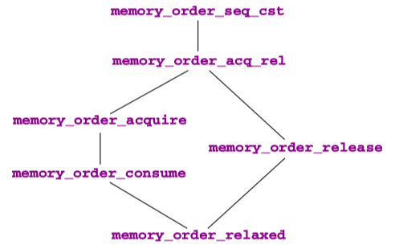

C Memory Order(Sequential Consistency)
The "happens before" relation is the only possible way to reason about timing between different threads. It is only established through synchronization that uses either atomic objects or very specific C library functions.
An atomic object can be used to synchronize two threads, if one thread writes a value and another thread reads the value that was written. Operations on atomics are guaranteed to be locally consistent.
Sequential consistency is the default consistency model for atomics, but not for other C library functions. It additionally assumes that all corresponding synchronization events are totally ordered.
Modern C, 1st Edition, 2019 | 19 Atomic access and memory consistency
Observe that these synchronizations are oriented: each synchronization between threads has a “writer” and a “reader” side. We attach two abstract properties to operations on atomics and to certain C library calls that are called release semantics (on the writer side), acquire semantics (for a reader), or acquire-release semantics (for a reader-writer).
Explicitly using acquire-release consistency can lead to more efficient code, but it needs a careful design to supply the correct arguments to the atomic functions with a _explicit suffix.
Sequential consistency#
The data consistency for atomic objects that we described earlier, guaranteed by the happened-before relation, is called acquire-release consistency. Whereas the C library calls we have seen always synchronize with that kind of consistency, no more and no less, accesses to atomics can be specified with different consistency models.
As you remember, all atomic objects have a modification order that is consistent with all sequenced-before relations that see these modifications on the same object. Sequential consistency has even more requirements than that; see figure 19.3. Here we illustrate the common timeline of all sequentially consistent operations on top. Even if these operations are performed on different processors and the atomic objects are realized in different memory banks, the platform has to ensure that all threads perceive all these operations as being consistent with this one global linearization.
TAKEAWAY 19.13: All atomic operations with sequential consistency occur in one global modification order, regardless of the atomic object they are applied to.
So, sequential consistency is a very strong requirement. Not only that, it enforces acquire-release semantics (a causal partial ordering between events), but it rolls out this partial ordering to a total ordering. If you are interested in parallelizing the execution of your program, sequential consistency may not be the right choice, because it may force sequential execution of the atomic accesses.
So, sequential consistency is a very strong requirement. Not only that, it enforces acquire-release semantics (a causal partial ordering between events), but it rolls out this partial ordering to a total ordering. If you are interested in parallelizing the execution of your program, sequential consistency may not be the right choice, because it may force sequential execution of the atomic accesses.
The standard provides the following functional interfaces for atomic types. They should conform to the description given by their name and also perform synchronization:
void atomic_store (A volatile* obj, C des) ;
C atomic_load (A volatile* obj) ;
C atomic_exchange (A volatile* obj, C des) ;
bool atomic_compare_exchange_strong (A volatile* obj, C *expe, C des) ;
bool atomic_compare_exchange_weak (A volatile* obj, C *expe, C des) ;
C atomic_fetch_add(A volatile* obj, M operand) ;
C atomic_fetch_sub (A volatile* obj, M operand) ;
C atomic_fetch_and(A volatile* obj, M operand) ;
C atomic_fetch_or (A volatile* obj, M operand) ;
C atomic_fetch_xor (A volatile* obj, M operand) ;
bool atomic_flag_test_and_set (atomic_flag volatile* obj);
void atomic_flag_clear (atomic_flag volatile* obj);
Here C is any appropriate data type, A is the corresponding atomic type, and M is a type that is compatible with the arithmetic of C. As the names suggest, for the fetch and operator interfaces the call returns the value that *obj had before the modification of the object. So these interfaces are not equivalent to the corresponding compound assignment operator (+=), since that would return the result after the modification.
All these functional interfaces provide sequential consistency.
TAKEAWAY 19.14: All operators and functional interfaces on atomics that don't specify otherwise have sequential consistency.
Observe also that the functional interfaces differ from the operator forms, because their arguments are volatile qualified.
There is another function call for atomic objects that does not imply synchronization:
Its effect is the same as a call to atomic_store or an assignment operation, but concurrent calls from different threads can produce a race. View atomic_init as a cheap form of assignment.
Other consistency models#
Memory model - cppreference.com | Threads and data races
A thread of execution is a flow of control within a program that begins with the invocation of a top-level function by thrd_create or other means.
Any thread can potentially access any object in the program (objects with automatic and thread-local storage duration may still be accessed by another thread through a pointer).
Different threads of execution are always allowed to access (read and modify) different memory locations concurrently, with no interference and no synchronization requirements. (note that it is not safe to concurrently update two non-atomic bit-fields in the same structure if all members declared between them are also (non-zero-length) bit-fields, no matter what the sizes of those intervening bit-fields happen to be)
When an evaluation of an expression writes to a memory location and another evaluation reads or modifies the same memory location, the expressions are said to conflict. A program that has two conflicting evaluations has a data race unless either
- both conflicting evaluations are atomic operations
- one of the conflicting evaluations happens-before another (see memory_order)
If a data race occurs, the behavior of the program is undefined.
in particular, mtx_unlock is synchronized-with, and therefore, happens-before mtx_lock of the same mutex by another thread, which makes it possible to use mutex locks to guard against data races)
A different consistency model can be requested with a complementary set of functional interfaces. For example, an equivalent to the postfix ++ operator with just acquire-release consistency could be specified with
_Atomic (unsigned) at = 67;
// ...
if (atomic_fetch_add_explicit (&at, 1, memory_order_acq_rel)) {
// ...
}
TAKEAWAY 19.15: Synchronizing functional interfaces for atomic objects have a form with
_explicitappended that allows us to specify their consistency model.
These interfaces accept additional arguments in the form of symbolic constants of type memory_order that specify the memory semantics of the operation:
// Defined in header <stdatomic.h>
enum memory_order {
memory_order_relaxed,
memory_order_consume,
memory_order_acquire,
memory_order_release, // (since C11)
memory_order_acq_rel,
memory_order_seq_cst
};
| Value | Explanation |
|---|---|
memory_order_relaxed |
Relaxed operation: there are no synchronization or ordering constraints imposed on other reads or writes, only this operation's atomicity is guaranteed (see Relaxed ordering below). |
memory_order_consume |
A load operation with this memory order performs a consume operation on the affected memory location: no reads or writes in the current thread dependent on the value currently loaded can be reordered before this load. Writes to data-dependent variables in other threads that release the same atomic variable are visible in the current thread. On most platforms, this affects compiler optimizations only (see Release-Consume ordering below). |
memory_order_acquire |
A load operation with this memory order performs the acquire operation on the affected memory location: no reads or writes in the current thread can be reordered before this load. All writes in other threads that release the same atomic variable are visible in the current thread (see Release-Acquire ordering below). |
memory_order_release |
A store operation with this memory order performs the release operation: no reads or writes in the current thread can be reordered after this store. All writes in the current thread are visible in other threads that acquire the same atomic variable (see Release-Acquire ordering below) and writes that carry a dependency into the atomic variable become visible in other threads that consume the same atomic (see Release-Consume ordering below). |
memory_order_acq_rel |
A read-modify-write operation with this memory order is both an acquire operation and a release operation. No memory reads or writes in the current thread can be reordered before the load, nor after the store. All writes in other threads that release the same atomic variable are visible before the modification and the modification is visible in other threads that acquire the same atomic variable. |
memory_order_seq_cst |
A load operation with this memory order performs an acquire operation, a store performs a release operation, and read-modify-write performs both an acquire operation and a release operation, plus a single total order exists in which all threads observe all modifications in the same order (see Sequentially-consistent ordering below). |
Refer to Concurrency support library - cppreference.com about the APIs of Atomic operations.
memory_order_seq_cstrequests sequential consistency. Using this is equivalent to the forms without_explicit.memory_order_acq_relis for an operation that has acquire-release consistency. Typically, for general atomic types, you'd use it for a read-modify-write operation such as atomic_fetch_add or atomic_compare_exchange_weak, or for atomic_flag with atomic_flag_test_and_set.memory_order_releaseis for an operation that has only release semantics. Typically this would be atomic_store or atomic_flag_clear.memory_order_acquireis for an operation that has only acquire semantics. Typically this would be atomic_load.memory_order_consumeis for an operation that has a weaker form of causal dependency than acquire consistency. Typically this would also be atomic_load.memory_order_relaxedis for an operation that adds no synchronization requirements. The only guarantee for such an operation is that it is indivisible(atomic). A typical use case for such an operation is a performance counter that is used by different threads, but for which we are only interested in a final accumulated count.
The consistency models can be compared with respect to the restrictions they impose to the platform. Figure 19.4 shows the implication order of the memory_order models.

Whereas memory_order_seq_cst and memory_order_relaxed are admissible for all operations, there are some restrictions for other memory_orders. Operations that can only occur on one side of a synchronization can only specify an order for that side. Therefore, the two operations that only store (atomic_store or atomic_flag_clear) may not specify acquire semantics. Three operations only perform a load and may not specify release or consume semantics: besides atomic_load, these are atomic_compare_exchange_weak and atomic_compare_exchange_strong in case of failure. Thus, the latter two need two memory_order arguments for their _explicit form, such that they can distinguish the requirements for the success and failure cases:
bool
atomic_compare_exchange_strong_explicit (A volatile* obj, C *expe, C des,
memory_order success,
memory_order failure) ;
bool
atomic_compare_exchange_weak_explicit (A volatile* obj, C *expe, C des,
memory_order success,
memory_order failure) ;
Here, the success consistency must be at least as strong as the failure consistency; see figure 19.4.
Up to now, we have implicitly assumed that the acquire and release sides of a synchronization are symmetric, but they aren't: whereas there always is just one writer of a modification, there can be several readers. Because moving new data to several processors or cores is expensive, some platforms allow us to avoid the propagation of all visible effects that happened before an atomic operation to all threads that read the new value. C's consume consistency is designed to map this behavior. We will not go into the details of this model, and you should use it only when you are certain that some effects prior to an atomic read will not affect the reading thread.
ARM Memory Barriers#
Refer to ARM64 Memory Barriers, ARM64 One-Way Barriers.
Enabling the LDAPR instructions for C/C++ compilers: Since the introduction of the Armv8-A architecture the defined mapping of atomic loads with an acquire memory model from C++11 has been to use the LDAR instruction. For example:
#include <atomic>
std::atomic<unsigned long> data;
unsigned long foo() {
return data.load(std::memory_order_acquire);
}
generates an LDAR instruction to preform the load from data. Such acquire loads are often paired with corresponding store-release operations using the STLR instructions.
arm - ARMv8.3 meaning of rcpc - Stack Overflow:
- When there is a
STLRfollowed by aLDARto a different address, then these 2 can't be reordered and hence it is calledRCsc(release consistent sequential consistent). - When there is a
STLRfollowed by aLDAPRto a different address, then these 2 can be reordered. This is calledRCpc(release consistent processor consistent).
In practice, STLR / LDAPR gives C++ std::memory_order_acq_rel, as opposed to SC.
references#
TC++PL4: The C++ Programming Language, Fourth Edition | 41. Concurrency
Modern C++ Programming Cookbook | Chapter 8: Leveraging Threading and Concurrency
C++ Concurrency in Action, Second Edition | 5. The C++ memory model and operations on atomic types
C和C++中的volatile、内存屏障和CPU缓存一致性协议MESI
深入理解C11/C++11内存模型
理解 C++ 内存一致性模型